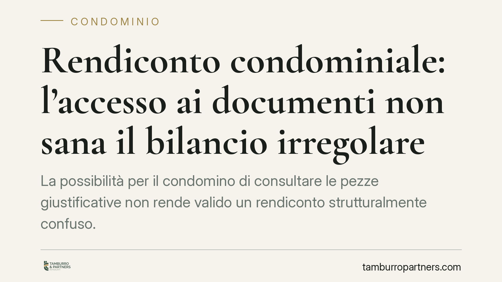

Rendiconto condominiale: l'accesso ai documenti non sana il bilancio irregolare
La possibilità per il condomino di consultare le pezze giustificative non rende valido un rendiconto strutturalmente confuso. Secondo l'orientamento del Tribunale di Roma, la chiarezza del bilancio è un requisito autonomo imposto dall'art. 1130-bis c.c.: se manca, la delibera di approvazione è annullabile. Un punto che interessa amministratori e condòmini, perché sposta l'attenzione dai singoli documenti alla leggibilità complessiva del conto.

Il principio in sintesi
Un rendiconto condominiale non diventa valido solo perché l'amministratore mette a disposizione i documenti contabili. La messa a disposizione delle cosiddette *pezze giustificative* — cioè fatture, ricevute, estratti conto che provano le singole spese — è cosa diversa dalla chiarezza del bilancio.
Il Tribunale di Roma ha ribadito questa distinzione: se il rendiconto è confuso, incompleto o non conforme alla struttura prevista dalla legge, la delibera che lo approva resta annullabile anche quando il condomino ha avuto pieno accesso agli allegati. L'accesso ai documenti, in altre parole, non supplisce a un conto illeggibile.
Inquadramento normativo
Il riferimento è l'art. 1130-bis del Codice civile, che disciplina il rendiconto condominiale. La norma richiede tre componenti obbligatorie:
- un registro di contabilità, dove sono annotate in ordine cronologico le entrate e le uscite;
- un riepilogo finanziario, che fotografa la situazione patrimoniale del condominio;
- una nota sintetica esplicativa, che illustra l'andamento della gestione e dà conto delle voci più rilevanti.
Queste tre parti devono consentire una lettura immediata e verificabile della gestione. La loro funzione è garantire che ciascun condomino possa comprendere come sono stati impiegati i fondi, senza dover ricostruire i conti da zero incrociando le fatture.
Quando questa trasparenza manca, il vizio non riguarda il singolo giustificativo ma l'intero impianto del documento. Secondo l'impostazione accolta dal Tribunale, il vizio di chiarezza può rilevare di per sé, a prescindere dalla prova di un danno economico specifico: è la stessa opacità del conto a incidere sul diritto del condomino a una gestione verificabile.
Il ruolo della consulenza tecnica
Nei giudizi di questo tipo è frequente il ricorso a una CTU, la *consulenza tecnica d'ufficio*: un esperto nominato dal giudice — spesso un commercialista o un perito contabile — analizza il rendiconto e verifica se le irregolarità siano meri errori materiali o difetti strutturali.
La distinzione è decisiva. Un errore isolato e correggibile non travolge la delibera. Un rendiconto che non rispetta la struttura dell'art. 1130-bis, invece, è viziato alla radice, e l'eventuale disponibilità dei documenti non lo recupera.
Implicazioni pratiche
Per l'amministratore il messaggio è netto: non è sufficiente conservare e mostrare le fatture. Il rendiconto deve essere redatto in modo ordinato, con le tre componenti di legge chiaramente distinte e collegate tra loro. Un bilancio opaco espone la delibera all'annullamento, con i costi e le tensioni che ne derivano.
Per il condomino si apre uno spazio di tutela più ampio. Non è tenuto a dimostrare di essere stato danneggiato da una specifica voce: può contestare la delibera quando il documento, nel suo complesso, non è leggibile né verificabile.
Resta però fermo il vincolo temporale. L'art. 1137 c.c. fissa in trenta giorni il termine per impugnare la delibera assembleare. È un termine di decadenza: decorso senza che sia stata proposta impugnazione, il diritto di contestare la delibera si perde definitivamente. Per chi riceve la convocazione, il termine decorre dall'approvazione; per l'assente, dalla comunicazione del verbale.
Cosa fare in concreto
- Leggi il rendiconto subito dopo l'assemblea, verificando la presenza e la coerenza delle tre componenti dell'art. 1130-bis.
- Annota per iscritto le richieste di chiarimento rivolte all'amministratore e conserva le risposte: documentano l'eventuale opacità del conto.
- Controlla la data di decorrenza dei trenta giorni ex art. 1137 c.c., distinguendo la tua posizione di presente o assente in assemblea.
- Distingui i vizi strutturali dagli errori correggibili: un esame contabile preliminare può aiutare a capire se il documento è recuperabile o radicalmente viziato.
- Valuta l'impugnazione entro il termine, senza attendere: oltre i trenta giorni la contestazione non è più ammessa.
La trasparenza del rendiconto non è un adempimento formale, ma la condizione che rende effettivo il controllo dei condòmini sulla gestione comune.
---
*Contributo informativo a cura di Tamburro & Partners Avvocati - Avv. Giuseppe Tamburro. Non costituisce parere legale.*
Ogni condominio ha una storia a sé.
Se gestisci un'amministrazione e vuoi un confronto su una specifica questione condominiale, scrivi allo studio. Ti rispondiamo entro un giorno lavorativo.